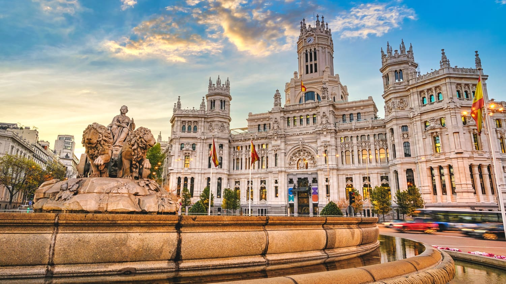
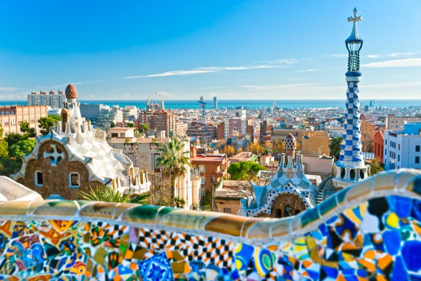
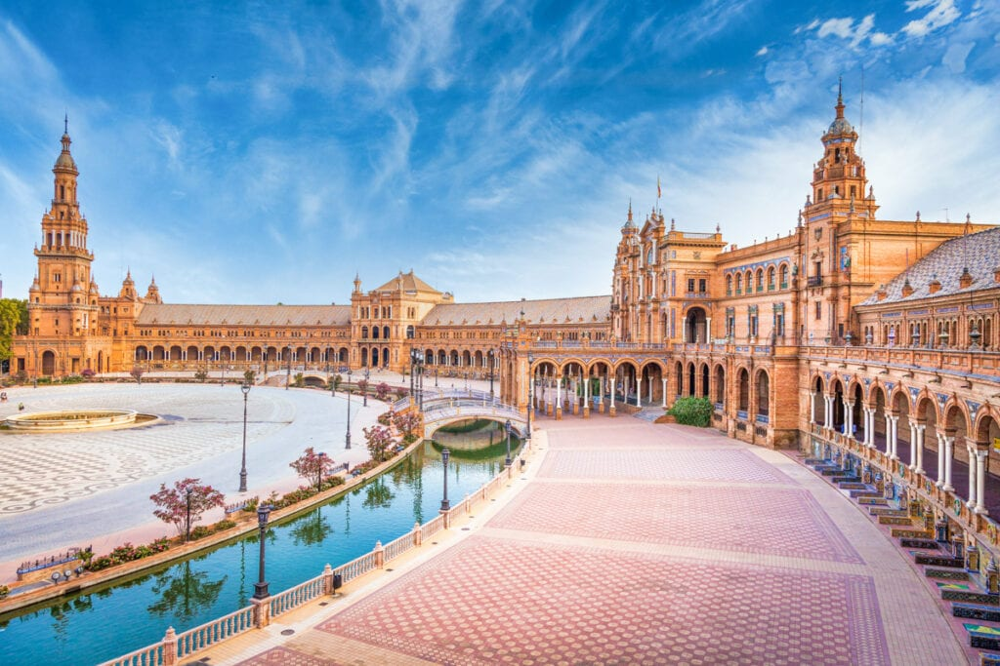

Spanien - Ein Fest aus Kultur und Küche
Auf der Iberischen Halbinsel in Europa gelegen, beeindruckt Spanien mit einer vielfältigen Kultur, Architektur und einer reichen Geschichte. Bekannt für seine ikonischen Feste, lebhaftes Nachtleben und malerische Strände, verspricht Spanien ein unvergessliches Erlebnis.
Beliebte Reiseziele:
- Madrid: Die kosmopolitische Hauptstadt, bekannt für ihre Kunst, Architektur und lebhaften Straßen.
- Barcelona: Eine Küstenstadt, bekannt für ihre modernistischen Sehenswürdigkeiten und die Architektur von Gaudí.
- Sevilla: Eine historische Stadt, berühmt für Flamenco-Tanz, gotische Kathedralen und lebendige Feste.
Küche:
Die spanische Küche bietet eine Mischung aus Geschmacksrichtungen mit Gerichten wie Paella, Tapas und Churros. Eine Mahlzeit in Spanien ist nicht komplett, ohne das berühmte spanische Barbecue erlebt zu haben.
Kultur:
Von den leidenschaftlichen Flamenco-Tänzen bis zu den spannenden Stierkämpfen ist die Kultur Spaniens sowohl vielfältig als auch fesselnd. Das Land ist auch bekannt für seine Feste wie La Tomatina und das Stiertreiben.
Stadthighlights:
Madrid
Das Herz Spaniens, Madrid vereint historische Orte, grüne Parks und ein pulsierendes Nachtleben.
Barcelona
Eine Stadt der Kunst und Architektur, Barcelona ist die Heimat der berühmten Sagrada Família und des Park Güell.
Sevilla
Bekannt für seine historischen Kathedralen und lebendige Feste, ist Sevilla ein Juwel von Andalusien.
Lass die Gaumen deiner Gäste explodieren: Paella

Paella ist ein traditionelles spanisches Reisgericht aus der Region Valencia.
Zum Rezept